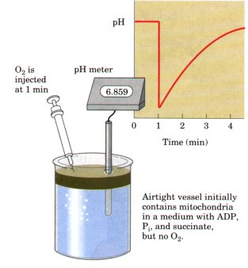
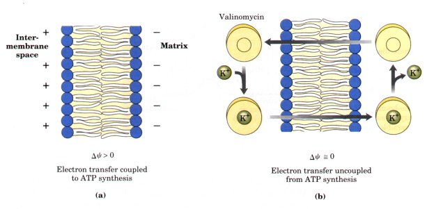
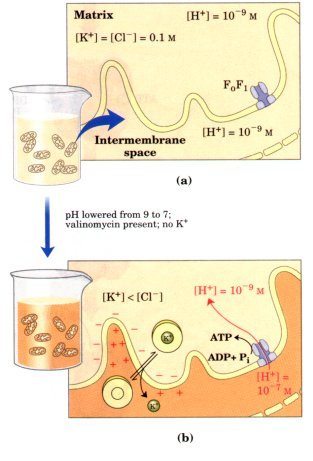
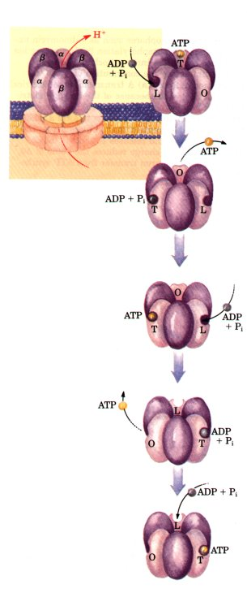
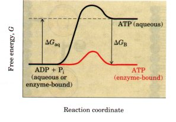
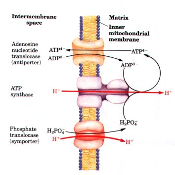
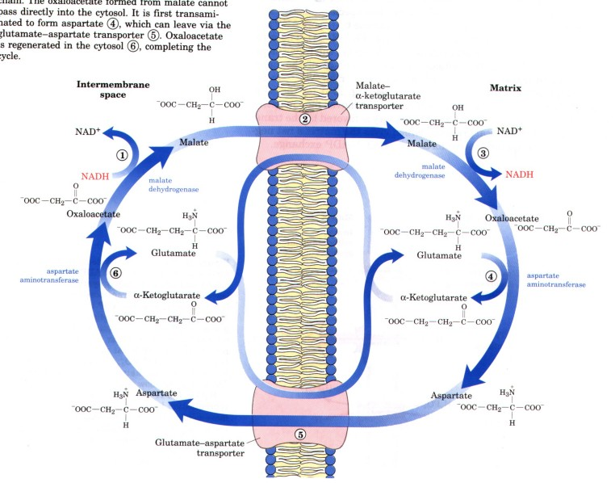
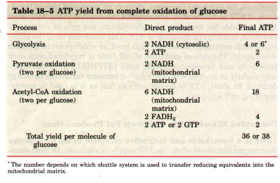
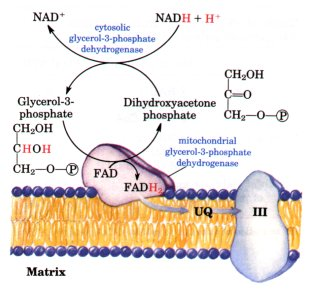
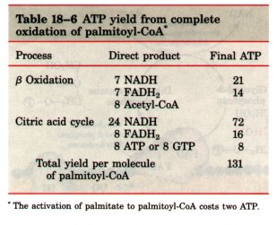

Strong Experimental Evidence Implicates the Proton-Motive
Force in ATP Synthesis
The transmembrane proton gradient predicted by chemiosmotic
theory has been experimentally measured. When intact mitochondria
are suspended with an oxidizable substrate such as succinate in a
lightly buf fered medium, the addition of O2 results in
acidification of the suspending medium (Fig. 18-19). The
stoichiometry of proton pumping can be estimated from the pH
changes, after correcting for buffering effects. The measurement
is difficult, and there is no universal agreement on the
stoichiometry; about ten protons are pumped out for each pair of
electrons transferred from NADH to O2. The result is a steady
state with a difference of about one pH unit between the matrix
and the medium, inside (matrix) alkaline. Indirect measurements
of the transmembrane electrical potential in respiring
mitochondria yield a value of 0.1 to 0.2 V, inside negative.
Substituting these values into the equation for proton-motive
force (Eqn 18-3) gives a value of 15 to 25 kJ/mol, the
free-energy change for the transmembrane movement of one
equivalent of protons back into the mitochondrial matrix. This
free-energy change is large enough to account for the synthesis
of one ATP when two to three protons flow into the matrix.
| Uncouplers are hydrophobic weak acids
(Fig. 18-14). Their hydrophobicity allows them to diffuse
readily across mitochondrial membranes. After entering
the mitochondrial matrix in the protonated form, they can
release a proton (dissociate), thus dissipating the
proton gradient. Ionophores uncouple electron transfer
from oxidative phosphorylation by creating electrical
short circuits across the mitochondrial membrane (Fig.
18-20). The toxic ionophore valinomycin forms a
lipid-soluble complex with K+, which is abundant in the
cytosol (see Fig. 10-26). Whereas K+ penetrates the
mitochondrial inner membrane only very slowly, the
K+-valinomycin complex readily passes through. The influx
of positive ions neutralizes the excess of negative
charge inside the matrix, diminishing the electrical
component of the proton-motive force. Valinomycin slows
mitochondrial ATP synthesis without blocking electron
transfer to O2 (Table 18-4). |
 Figure
18-19 Isolated mitochondria are
suspended in a medium containing ADP, Pi, and succinate,
but initially no O2. When a small amount of O2 is
injected into the reaction mixture, succinate oxidation
and electron transfer to O2 begin immediately. A pH
electrode registers a sudden decrease in the pH of the
medium, indicating that protons are moving out of the
mitochondria. As the injected O2 is consumed, protons
slowly leak back into the mitochondria, and the external
pH returns to the initial level. From the known amount of
O2 added and the measured pH change, one can in principle
calculate the number of protons extruded per molecule of
O2 consumed.
|
Figure 18-20 Ionophores such
as valinomycin uncouple oxidative phosphorylation by dissipating
ion gradients across the inner mitochondrial membrane,
eliminating the contribution of Δψ to the proton-motive force.
(a) A transmembrane electrical potential (Δψ) exists because of
the unequal distribution of protons on either side. (b)
Valinomycin combines reversibly with K+ ions to form a
membrane-permeable complex that diffuses across the inner
membrane and releases K+ on the inside. This movement of charge
reduces the value of Δψ, and uncouples electron transfer from ATP
synthesis.

If the role of electron transfer in mitochondrial
ATP synthesis is simply to pump protons to create the
electrochemical potential of the proton-motive force, an
artificially created proton gradient should be able to replace
electron transfer in driving ATP synthesis. This prediction of
the chemiosmotic theory has been experimentally tested and
confirmed (Fig. 18-21). Mitochondria manipulated so as to impose
a difference of proton concentration and a separation of charge
across the inner membrane (Fig. 18-21) carry out the synthesis of
ATP in the absence of an oxidizable substrate; the proton-motive
force alone suf fices to drive ATP synthesis.
Chemiosmotic theory also accounts for a third
condition that uncouples oxidation from
phosphorylation-mechanical disruption of the mitochondrial
membrane. Without an intact membrane there can be no proton
gradient, hence no energy conservation and no ATP synthesis.
The Detailed Mechanism
of ATP Formation ftemains Elusive
Although it is clear that a transmembrane
proton gradient provides the energy for ATP synthesis, it
is not clear how this energy is transmitted to the ATP
synthase. This enzyme catalyzes the conversion of
enzyme-bound ADP and Pi into bound ATP even in the
absence of a proton gradient. Remarkably, it appears that
the reaction ADP + Pi  ATP + H2O is readily
reversible-that the free-energy change for ATP synthesis
on the enzyme surface is close to zero. However, the ATP
formed in this reaction remains tightly bound to the
active site, preventing further catalysis at that site.
The proton-motive force apparently supplies the energy
needed to force dissociation of the tightly bound ATP
from the enzyme, allowing another catalytic cycle to
begin. ATP + H2O is readily
reversible-that the free-energy change for ATP synthesis
on the enzyme surface is close to zero. However, the ATP
formed in this reaction remains tightly bound to the
active site, preventing further catalysis at that site.
The proton-motive force apparently supplies the energy
needed to force dissociation of the tightly bound ATP
from the enzyme, allowing another catalytic cycle to
begin.
How is it possible that ATP synthesis,
known to be strongly endergonic in aqueous solution (ΔG°'
= 30.5 kJ/mol), is readily reversible on the enzyme
surface? The very tight noncovalent binding of enzyme to
ATP may supply enough binding energy (Chapter 8) to make
bound ATP about as stable as its hydrolysis products
(Fig. 18-22). Alternatively, the reaction may occur in a
very hydrophobic pocket in the enzyme interior, where the
energetics of hydrolysis in water do not apply.
|
 Figure
18-21 An artificially imposed
electrochemical gradient can drive ATP synthesis in the
absence of an oxidizable substrate as electron donor. In
this two-step experiment, isolated mitochondria are first
incubated in a pH 9 buffer containing 0.1 M KCl (a). The
slow leakage of buffer and KCl into the mitochondria
eventually brings the matrix into equilibrium with the
surrounding medium. No oxidizable substrates are present.
(b) In the second step, mitochondnia are separated from
the pH 9 buffer and resuspended in pH 7 buffer containing
valinomycin but no KCl. The change in buffer creates a
difference of two pH units. The outward flow of K+,
carried (without a counterion) down its concentration
gradient by valinomycin, creates a charge imbalance
across the membrane (matrix negative). The sum of the
chemical potential provided by the pH difference and the
electrical potential provided by the separation of
charges is a proton-motive force large enough to support
ATP synthesis in the absence of an oxidizable substrate.
|
| Fignre 18-22 Reaction coordinate diagram for the
condensation of ADP and Pi to form ATP on the surface of
ATP synthase. Although the free-energy change for this
reaction in aqueous solution (ΔGaq) is large and
positive, the very tight binding of ATP to the enzyme
provides binding energy (ΔGB) that brings the free energy
of enzyxne-bound ATP close to that of ADP + Pi. On the
enzyme surface, the reaction is therefore readily
reversible; the equilibrium constant is believed to be
near 1. 
|
 Each
F1 complex has the subunit composition α3β3γδε (Fig.
18-15). A tight binding site for ATP, apparently
identical to the catalytic site, is located on each β
subunit, or perhaps between each β and its associated a
subunit. Every F1 complex therefore has three
ATP-synthesizing sites, which interact with F0 through
the single copies of γ, δ, and ε subunits.
On the basis of detailed kinetic and
binding studies of the reactions catalyzed by F0F1, Paul
Boyer has suggested a mechanism (Fig. 18-23) in which the
three active sites on F1 alternate in catalyzing ATP
synthesis. The limiting step in the process is the
release of newly synthesized ATP from the enzyme. A
conformational transition driven by the proton-motive
force reduces the enzyme's affinity for ATP.
Figure 18-23 The "binding change" model for ATP
synthase action. The enzyme has three equivalent adenine
nucleotide binding sites, one for each pair of α and β
subunits. At any given moment, one of these sites is in
the T (tight-binding) conformation, a second is in the L
(loose-binding) conformation, and a third is in the O
(open; very loose-binding) conformation. At the beginning
of a catalytic cycle, the T site is occupied by ATP, and
ADP and Pi bind loosely to the L site. The proton-motive
force causes, perhaps by the flow of protons through the
F0 channel, a cooperative conformational change in which
the T site is converted to an O site, and ATP dissociates
from it; the L site is converted to a T site, where ADP
and P; quickly condense to form ATP; and the O site
becomes an L site, where ADP and Pi loosely bind. The
experimental results require that at least two of the
three catalytic sites alternate in activity; ATP cannot
be released from one site unless and until ADP and Pi are
bound at the other.
|
The transition induced by the proton-motive force may be
envisioned as a 120° rotation of the α3β3 portion of F1 (Fig.
18-23), placing one of the three α-β pairs in a special position
relative to the proton channel of F0. However, no physical
rotation of F1 has been demonstrated, and the model does not
require it; the conformational change that interconverts the
three types of sites may be an allosteric transition, in which
changes at one α-β pair force compensating changes in the other
two pairs.
What makes the mechanism of this enzyme particularly difficult
to solve is the Uectorial nature of the process it catalyzes.
Somehow, the enzyme must sense not merely a certain concentration
of protons, but a difference of proton concentration in two
regions of space. Determination of the detailed structure of F1
by x-ray crystallography should shed light on the mechanism of
its action.
The Proton-Motive Force Energizes Active Transport
The primary role of electron transfer in mitochondria is to
furnish energy for the synthesis of ATP during oxidative
phosphorylation, but this energy serves also to drive several
transport processes essential to oxidative phosphorylation. We
have seen that the inner mitochondrial membrane is generally
impermeable to charged species, but two specific systems in the
inner mitochondrial membrane transport ADP and Pi into the matrix
and ATP out to the cytosol (Fig. 18-24). The adenine nucleotide
translocase, which extends across the inner membrane, binds ADP3-
on the outside (cytosolic) surface of the inner membrane and
transports it inward in exchange for an ATP4- molecule
simultaneously transported outward (see Fig. 13-1 for the ionic
forms of ATP and ADP). Because this antiporter moves four
negative charges out for each three moved in, its activity is
favored by the transmembrane electrochemical gradient, which
gives the matrix a net negative charge; the proton-motive force
drives ATP-ADP exchange.
Figure 18-24
Transport systems of the mitochondrial
inner membrane carry ADP and Pi into the matrix and allow
the newly synthesized ATP to leave. The ATP-ADP
translocase is an antiporter; the same protein moves ADP
into the matrix and ATP out. The effect of replacing
ATP4- with ADP3- is the net efflux of one negative
charge, which is favored because the matrix is
electrically negative relative to the outside. At pH 7,
Pi is present as both HPO42- and H2PO4-; the transport
system that carries Pi into the matrix is specific for
H2PO4-. There is no net flow of charge during symport
of H2PO4- and H+, but the relatively low proton
concentration in the matrix favors the inward movement of
H+. Thus the proton-motive force is responsible both for
providing the energy for ATP synthesis by ATP synthase
and for transporting substrates (ADP and Pi) in and
product (ATP) out of the mitochondrial matrix..
|
 |
Adenine nucleotide translocase is specifically inhibited by
atractyloside, a toxic glycoside formed by a species of thistle;
for centuries it has been known that grazing cattle are poisoned
when they ingest this plant. If the transport of ADP into and ATP
out of the mitochondria is inhibited, cytosolic ATP cannot be
regenerated from ADP, explaining the toxicity of atractyloside
(Table 18-4).
A second membrane transport system essential to oxidative
phosphorylation is the phosphate translocase, which promotes
symport of one H2P04- and one H+ into the matrix. This transport
process, too, is favored by the transmembrane proton gradient
(Fig. 18-24).
Shuttle Systems Are Required for Mitochondrial Oxidation of
Cytosolic NADH
The NADH dehydrogenase of the inner mitochondrial membrane of
animal cells can accept electrons only from NADH in the matrix.
Given that the inner membrane is not permeable to cytosolic NADH,
how can the NADH generated by glycolysis outside mitochondria be
reoxidized to NAD+ by O2 via the respiratory chain? Special
shuttle systems carry reducing equivalents from cytosolic NADH
into mitochondria by an indirect route. The most active NADH
shuttle, which functions in liver, kidney, and heart
mitochondria, is the malate-aspartate shuttle (Fig. 18-25). The
reducing equivalents of cytosolic NADH are first transferred to
cytosolic oxaloacetate to yield malate by the action of cytosolic
malate dehydrogenase. The malate thus formed passes through the
inner membrane into the matrix via the malatea-ketoglutarate
transport system. Within the matrix the reducing equivalents are
passed by the action of matrix malate dehydrogenase to matrix
NAD+, forming NADH; this NADH can then pass electrons directly to
the respiratory chain in the inner membrane. Three molecules of
ATP are generated as this pair of electrons passes to 02.
Cytosolic oxaloacetate must be regenerated via transamination
reactions (see Fig. 17-5) and the activity of membrane
transporters (Fig. 18-25) to start another cycle of the shuttle.

Figure 18-25 The
malate-aspartate shuttle for transporting reducing equivalents
from cytosolic NADH into the mitochondrial matrix. 1. NADH in the
cytosol (intermembrane space) passes two reducing equivalants to
oxaloacetate, producing malate. 2. Malate is transported across
the inner membrane by the malate-a-ketoglutarate transporter. 3.
In the matrix, malate passes two reducing equivalants to NAD+;
the resulting matrix NADH is oxidized by the mitochondrial
respiratory chain. The oxaloacetate formed from malate cannot
pass directly into the cytosol. It is first transaminated to form
aspartate 4. which can leave via the glutamate-aspartate
transporter 5. Oxaloacetate is regenerated in the cytosol 6,
completing the cycle.
| In skeletal muscle and brain, another
type of NADH shuttle, the glycerol-3-phosphate shuttle,
occurs (Fig. 18-26). It differs from the malate-aspartate
shuttle in that it delivers the reducing equivalents from
NADH into Complex III, not Complex I (Fig. 18-9),
providing only enough energy to synthesize two ATP
molecules per pair of electrons. The mitochondria of
higher plants have an externally oriented NADH
dehydrogenase that is able to transfer electrons directly
from cytosolic NADH into the respiratory chain.

|
 Fignre
18-26 The glycerol-3-phosphate
shuttle, an alternative means of moving reducing
equivalents from the cytosol to the mitochondrial matrix.
Dihydroxyacetone phosphate in the cytosol accepts two
reducing equivalents from cytosolic NADH in a reaction
catalyzed by cytosolic glycerol-3-phosphate
dehydrogenase. A membrane-bound isozyme of
glycerol-3-phosphate dehydrogenase, located on the outer
face of the inner membrane, transfers two reducing
equivalents from glycerol-3-phosphate in the
intermembrane space to ubiquinone. Note that this shuttle
does not involve membrane transport systems.
|
Oxidative Phosphorylation Produces Most of the ATP Made in
Aerobic Cells
The complete oxidation of a molecule of glucose to CO2 yields
two ATP and two NADH from glycolysis in the cytosol (Chapter 14);
two NADH from pyruvate oxidation in the mitochondrial matrix
(Chapter 15); and two ATP, six NADH, and two FADH2 from citric
acid cycle reactions in the matrix (Chapter 15). Each NADH
produced in the matrix yields three ATP from mitochondrial
oxidative phosphorylation, and for each FADH2, two ATP are
generated. Cytosolic NADH, after shuttling into the matrix,
yields two or three ATP, depending on which shuttle is used. The
total yield of glucose oxidation is therefore 36 or 38 ATP per
glucose (Table 18-5).

By comparison, glycolysis under anaerobic conditions
(lactate fermentation) yields only two ATP per glucose. Clearly,
the evolution of oxidative phosphorylation provided a tremendous
increase in the energetic efficiency of catabolism.
The oxidation of fatty acids and amino acids also takes place
within the mitochondrial matrix, and the FADH2 and NADH produced
by these oxidative pathways also serve as electron donors for
oxidative phosphorylation. Complete oxidation of the 16-carbon
saturated fatty acid palmitate to CO2 produces eight acetyl-CoAs,
seven FADH2, and seven NADH (Chapter 16). The oxidation of each
acetyl-CoA via the citric acid cycle produces three NADH, one
FADH2, and one ATP (GTP). The gain in ATP is therefore 131 ATP
(Table 18-6); but, because the activation of palmitate to
palmitoyl-CoA costs two ATP equivalents, the net gain is 129 ATP
per palmitate. A similar calculation may be made for the ATP
yield upon oxidation of each of the amino acids (Chapter 17). The
important conclusion here is that aerobic oxidative pathways that
result in electron transfer to O2 accompanied by oxidative
phosphorylation account for the vast majority of the ATP produced
in catabolism.